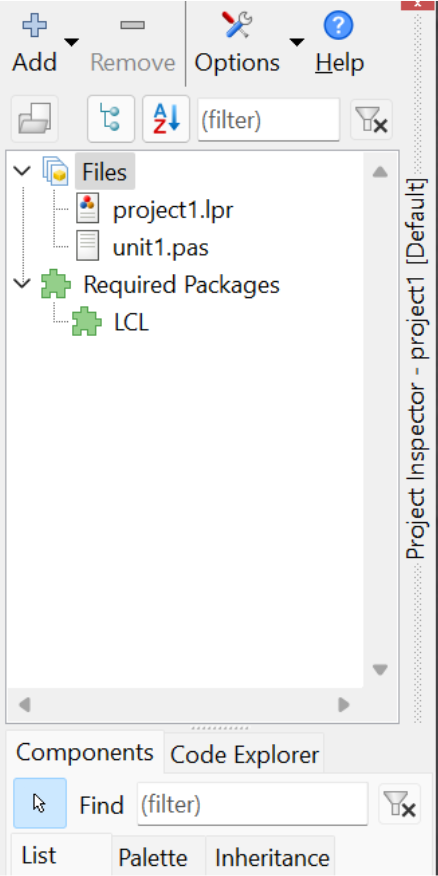
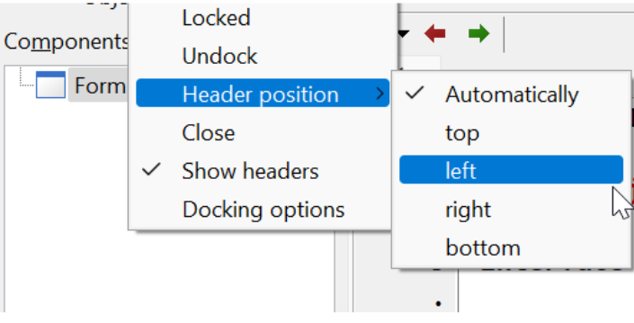
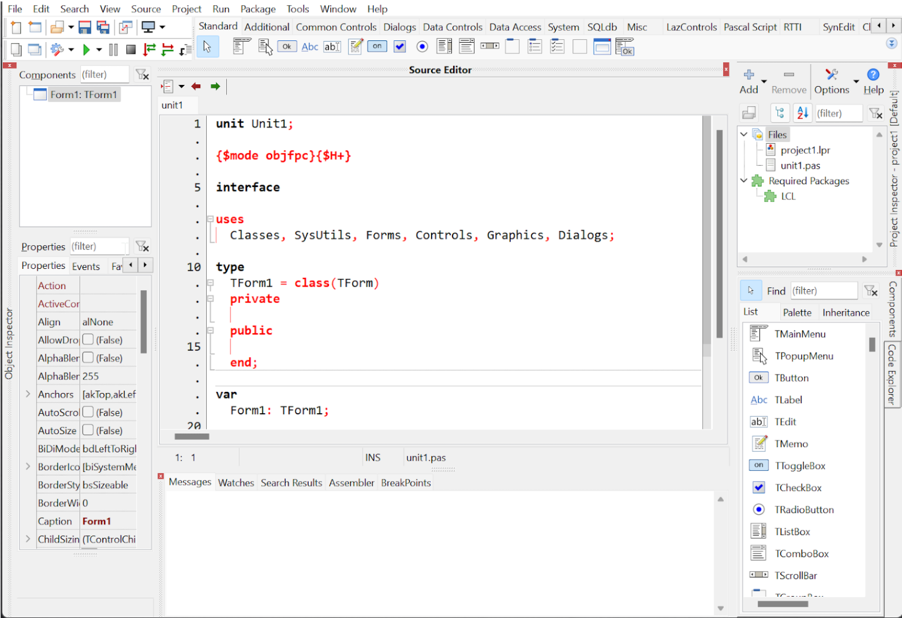

Cabeçalhos são esses títulos mais destacados das janelas de ferramentas(toolboxes):
Os cabeçalhos geralmente estão na parte de cima, mas conforme a conveniência podem ficar abaixo, direita e esquerda. Isso nos dá a possibilidade de priorizar algumas ferramentas que são mais úteis do que outras em determinado momento. Vamos a um exemplo, clique com o botão direito sobre o cabeçalho do Project Inspector e no menu aparecerá a opção Header position->Right:
E então ficará assim:

Repita o mesmo processo a todas as ferramentas que estiverem à direita como Components e Code Explorer. E então ficarão assim:
Pode não ter notado, mas você ganhou altura, em monitores widescreen isso é muito importante porque temos mais largura do que altura.
Você pode repetir a operação com os paineis a esquerda como Object Inspector, deixando-o à esquerda:

Ao final do processo estará assim:
